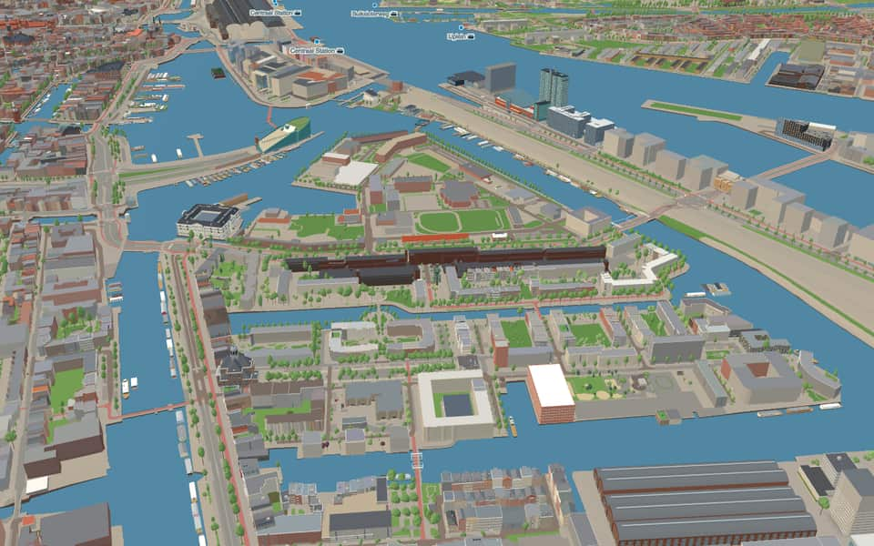
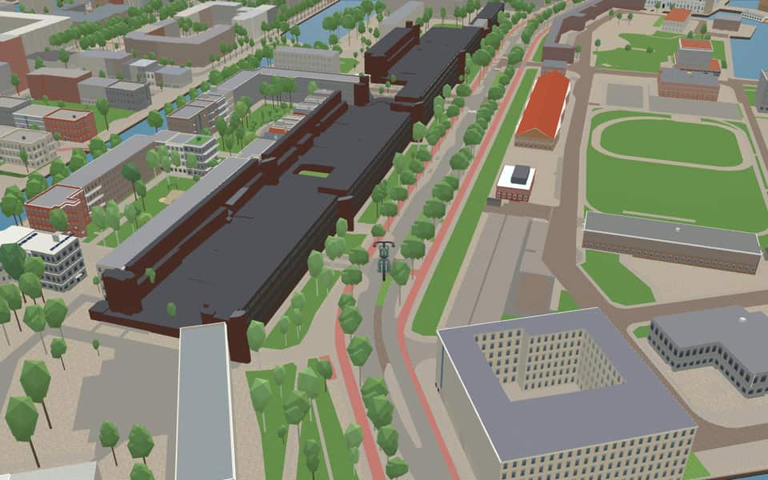

Neighbourhood in Oostelijke Eilanden
Kattenburg
Kattenburg is the westernmost of the three Eastern Islands, built out into the IJ in the second half of the 17th century. nl.wikipedia.org
The name. One explanation is that a 'kat', a defensive work, once stood here; it can still be seen in the bend of the Kattenburgerstraat. 'Kat' and 'burg' together made 'Kattenburg'. nl.wikipedia.org
Ride Kattenburg1 modelled building · 24 facts · 20 name stories


In the game
Frames from a ride through Kattenburg.


6 more photos of Kattenburg

.jpg){kind=link}

.jpg){kind=link}


Built here
Buildings modelled one by one for the ride.
Kattenburgerstraat 206-266, Amsterdam (Kattenburg)
1976 brown concrete-and-brick gallery-access housing slab
Did you know
Trivia the ride can show you here.
- Kattenburg's shipyard workers were nicknamed the ‘Bijltjes’ (little axes), after the main tool of wooden shipbuilding. Wikipedia (translated from Dutch)
- In the late 1970s and early 1980s Kattenburg was known for its residents' fight against high rents. Wikipedia (translated from Dutch)
- A facade wall on the square by the Kattenburgerstraat reconstructs old buildings that once stood on Kattenburg. Wikipedia (translated from Dutch)
- The Bijltjespad is named after the ‘Bijltjes’, the Kattenburgers who worked in the shipyards here. Wikipedia (translated from Dutch)
- Until the mid-17th century the Eastern Islands were marshy land outside the dyke, bounded by a summer dyke, the Cadijck, to the south and the IJ to the north. As Amsterdam grew explosively from the late 16th century, the Lastage was added to the city and the islands of Rapenburg, Uilenburg and Valkenburg were built; the last, opposite the Lastage, was the Waalseiland in 1634. nl.wikipedia.org
- DijksgrachtThe protective dike was built in the late 19th century to stop silting on the Eastern Islands. en.wikipedia.org
- DijksgrachtSinger Ramses Shaffy lived on a houseboat here during the 1970s. en.wikipedia.org
- DijksgrachtA railway line runs directly atop the dike structure itself. en.wikipedia.org
- DijksgrachtThe name Dijksgracht translates to Dike Canal. en.wikipedia.org
- KattenburgervaartThe Kattenburgervaart separates Wittenburg, an island built in the 17th century. en.wikipedia.org
- KattenburgervaartThe Kippebrug is a fixed bridge for cyclists dating to 1923. en.wikipedia.org
- KattenburgervaartOne missing bridge was historically known as the Worm bridge. en.wikipedia.org
- Nieuwe VaartResidents could isolate the island by lifting the Kattenburger bridge during the 1787 Bijltjesoproer riot. en.wikipedia.org
- Nieuwe VaartIn 1917, stone-throwing women followed a potato barge through the canal before police fired into the air. en.wikipedia.org
10 more facts
- Nieuwe VaartThe canal was dug in 1649 to fix silting problems caused by the island crossing much of the IJ. en.wikipedia.org
- Nieuwe VaartA houseboat association formed in 2011 after city plans threatened to remove most berths from the western section. en.wikipedia.org
- BijltjespadThe name Bijltjespad honors the Kattenburgers, nicknamed Bijltjes for their carpentry axes. nl.wikipedia.org
- KattenburgergrachtGVB bus line 22 travels along this continuous route known as the Eilandenboulevard. nl.wikipedia.org
- KattenburgerpleinMost original buildings vanished during a major redevelopment between 1963 and 1976. nl.wikipedia.org
- KattenburgerpleinThe northern facade looks old but was actually constructed in 1970 to mimic historical styles. nl.wikipedia.org
- KattenburgerpleinA distinctive tower crowns an 1898 municipal monument designed by Willem Kromhout. nl.wikipedia.org
- KattenburgerstraatTram service ended here in 1932 after the neighborhood suffered from the economic recession. nl.wikipedia.org
- Prins HendrikkadeHouse numbers skip wildly, restarting at 27 and again at 38 after major omissions. nl.wikipedia.org
- Prins HendrikkadeThe 17th-century Zeemagazijn building has housed the National Maritime Museum since 1973. nl.wikipedia.org
Names on the map
Where the canal, bridge and street names come from.
Canals and water
- DijksgrachtThe street was laid out as a dike at the end of the sixteenth century, after which the surroundings (long a marsh) were filled in with earth (aangeplempt).
- KattenburgervaartA canal named after Kattenburg, the westernmost of the three Eastern Islands in Amsterdam.
- Nieuwe VaartNamed after the Nieuwe Vaart, dug around 1650 to link the IJ and the Oosterdok by the shortest possible route with the mouth of the IJ at Zeeburg.
Bridges
- PaerlduikerTakes its name from the brewery 'De Paerl' (the pearl), built on Wittenburg in the middle of the seventeenth century by Reinst and Grootenhuizen.Bridge 91: a brick bridge for road traffic, dated 1877 in the city's bridge register.
- Witte KatbrugNamed after the animal (the white cat).Bridge 1914: a wooden bridge for pedestrians, dated 1986 in the city's bridge register.
Streets
- BijltjespadDe Bijltjes (the Little Axes) was the name given to the people of Kattenburg (shipwrights) in the eighteenth and nineteenth centuries. They are known for the fight over the Kattenburgerbrug between the Patriots and the Bijltjes, who supported the House of Orange.
- DijksgrachtNamed after the water of the same name, which runs along the inside of the railway embankment here. The embankment originally closed off the Oosterdok from the IJ, which was then still open.
- KattenburgergrachtOne of the three eastern islands, with Wittenburg and Oostenburg. It was already called Kattenburg before it was diked and built on in the second half of the seventeenth century. No explanation for the name has been found so far. There was a house called 'de Cat', but that name is only recorded in the eighteenth century. After many buildings had been demolished during the occupation, the rest were demolished in 1965-1968. Rebuilding then began on a new street plan. The Kattenburgerplein is the only thing that still recalls the old buildings.
- KattenburgerhofOne of the three eastern islands, with Wittenburg and Oostenburg. It was already called Kattenburg before it was diked and built on in the second half of the seventeenth century. No explanation for the name has been found so far. There was a house called 'de Cat', but that name is only recorded in the eighteenth century. After many buildings had been demolished during the occupation, the rest were demolished in 1965-1968. Rebuilding then began on a new street plan. The Kattenburgerplein is the only thing that still recalls the old buildings.
- KattenburgerkadeOne of the three eastern islands, with Wittenburg and Oostenburg. It was already called Kattenburg before it was diked and built on in the second half of the seventeenth century. No explanation for the name has been found so far. There was a house called 'de Cat', but that name is only recorded in the eighteenth century. After many buildings had been demolished during the occupation, the rest were demolished in 1965-1968. Rebuilding then began on a new street plan. The Kattenburgerplein is the only thing that still recalls the old buildings.
- KattenburgerkruisstraatOne of the three eastern islands, with Wittenburg and Oostenburg. It was already called Kattenburg before it was diked and built on in the second half of the seventeenth century. No explanation for the name has been found so far. There was a house called 'de Cat', but that name is only recorded in the eighteenth century. After many buildings had been demolished during the occupation, the rest were demolished in 1965-1968. Rebuilding then began on a new street plan. The Kattenburgerplein is the only thing that still recalls the old buildings.
- KattenburgerpleinOne of the three eastern islands, with Wittenburg and Oostenburg. It was already called Kattenburg before it was diked and built on in the second half of the seventeenth century. No explanation for the name has been found so far. There was a house called 'de Cat', but that name is only recorded in the eighteenth century. After many buildings had been demolished during the occupation, the rest were demolished in 1965-1968. Rebuilding then began on a new street plan. The Kattenburgerplein is the only thing that still recalls the old buildings.
- KattenburgerstraatOne of the three eastern islands, with Wittenburg and Oostenburg. It was already called Kattenburg before it was diked and built on in the second half of the seventeenth century. No explanation for the name has been found so far. There was a house called 'de Cat', but that name is only recorded in the eighteenth century. After many buildings had been demolished during the occupation, the rest were demolished in 1965-1968. Rebuilding then began on a new street plan. The Kattenburgerplein is the only thing that still recalls the old buildings.
- LeeuwenwerfThe former shipyard 'De Gouden Leeuw' (the golden lion), which lay here along the canal.
- MarinierskadeAfter the nearby Marines barracks.
- OlifantswerfAfter the former shipyard 'De Olyphant' (the elephant) that was here on Kattenburg.
- PaerlduikerTakes its name from the brewery 'De Paerl' (the pearl), built on Wittenburg in the middle of the seventeenth century by Reinst and Grootenhuizen.
3 more streets with a story
- Prins HendrikkadeThe youngest son of King William II, Prince Willem Frederik Hendrik (1820-1879), who took a keen interest in trade and shipping. His bust, made in 1885 by Professor F. Stracke, stands opposite the Scheepvaarthuis. With the naming in 1879 a number of vivid names disappeared, and with them a piece of the city's memory.
- RavenwerfThe shipyard 'De Zwarte Raaf' (the black raven), which once lay here between the Kattenburgerstraat and the Kattenburgergracht.
- Witte KatbrugNamed after the animal (the white cat).